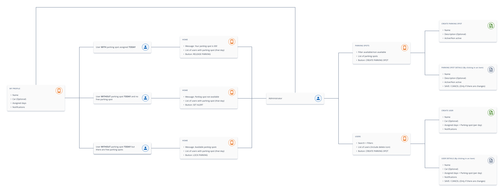
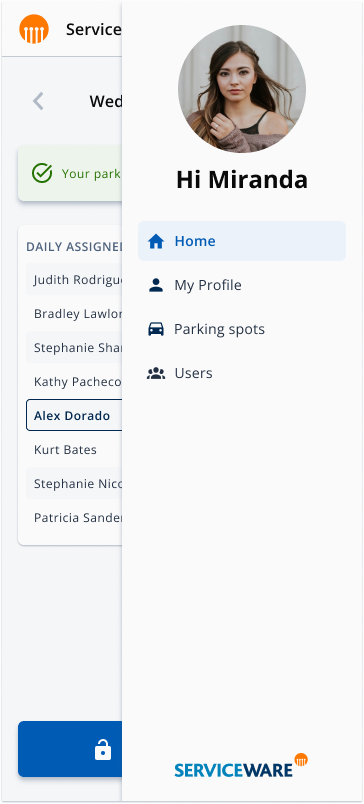
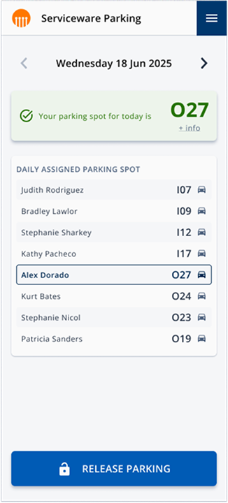
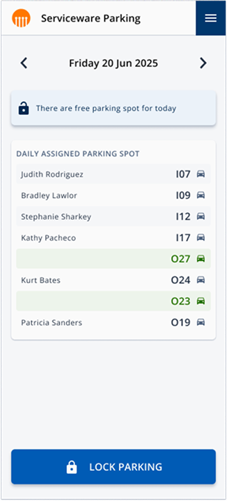

Contexto
El reto
En una de las oficinas de Serviceware el aparcamiento del edificio es compartido con otras empresas, por lo que no todos los empleados disponen de una plaza asignada de forma fija. La situación generaba un problema cotidiano, ya que algunos empleados tenían plazas que no utilizaban determinados días mientras que otros necesitaban aparcar sin tener visibilidad sobre cuáles estaban disponibles, lo que derivaba en fricciones y conflictos entre compañeros.
La solución surgió de la iniciativa de un compañero que, al detectar el problema, propuso diseñar una aplicación móvil para que los empleados pudieran visualizar las plazas disponibles y gestionar su asignación de forma transparente, eliminando así la gestión informal que existía hasta ese momento. El reto era diseñar una herramienta de uso diario que cualquier empleado pudiera utilizar en pocos segundos, sin fricción y sin necesidad de aprendizaje previo.
Mi rol
Me involucré en el proyecto de forma voluntaria, asumiendo el rol de designer desde la fase de ideación. Mi trabajo cubrió la definición de las funcionalidades y los flujos de usuario, la arquitectura de información de la aplicación, el diseño visual de las pantallas y sus estados, el prototipado rápido y el testing con compañeros, cuyos comentarios permitieron refinar la solución antes de pasar a desarrollo.
Proceso
Definir el alcance del MVP: qué resolver primero
La primera decisión fue determinar qué funcionalidades debía incluir el MVP y cuáles podían quedar para iteraciones futuras. Antes de definir nada, analicé aplicaciones existentes de gestión de recursos compartidos para identificar patrones de interacción útiles y captar ideas que pudieran aplicarse al contexto de la oficina. Ese análisis, combinado con el conocimiento directo del problema que ya teníamos, nos permitió centrarnos rápidamente en los escenarios más frecuentes sin partir de cero.
Trabajando con mi compañero, definimos las funcionalidades esenciales: la posibilidad de liberar una plaza asignada cuando el empleado no iba a la oficina, y la de reservar una plaza disponible con asignación automática al primer empleado que lo solicitara. Añadimos también un sistema de alertas para que los empleados sin plaza pudieran recibir una notificación cuando se liberara alguna, sin tener que estar pendientes de la aplicación.

Dos perfiles con flujos claros y responsabilidades distintas
A partir de las funcionalidades definidas, estructuramos la aplicación en torno a dos perfiles con necesidades y flujos distintos. El perfil de empleado cubría las acciones cotidianas: consultar si tenía plaza asignada, liberarla, reservar una disponible y gestionar alertas. El perfil de administrador cubría la gestión del sistema: alta de nuevos empleados, asignación de días fijos de aparcamiento y registro de nuevas plazas que la empresa pudiera adquirir.
La prioridad en ambos perfiles fue la misma: que cada acción fuera resoluble en pocos pasos y sin ambigüedad, de forma que la aplicación no requiriera ningún tipo de aprendizaje previo.
Para el diseño visual utilicé las primeras versiones de Code Blue como base, lo que además de garantizar coherencia y calidad en los componentes, permitió identificar oportunidades de mejora en el propio sistema que se incorporaron en versiones posteriores.



Prototipar rápido y validar con los usuarios al lado
Al tratarse de una herramienta interna y tener acceso directo a los usuarios finales, pude validar las decisiones de diseño de forma continua y sin fricción. Diseñé prototipos rápidos para validar interacciones, comprensión y copy, y los probé directamente con compañeros de la oficina. Sus comentarios permitieron ajustar pantallas y flujos antes de pasar a desarrollo, acortando los ciclos de iteración de forma significativa.
Esta proximidad con los usuarios fue uno de los aspectos más diferenciales del proyecto respecto a los entornos B2B habituales, donde el acceso directo al usuario final es mucho más limitado.
Impacto
Parking Spot se convirtió en un MVP funcional que resolvió de forma directa y efectiva la fricción en la gestión del aparcamiento de la oficina. Desde su implantación en julio de 2025, el 100% de los empleados de la oficina utiliza la aplicación, algo que valida que la solución era suficientemente simple y clara para ser adoptada sin fricción ni formación previa.
El impacto más concreto es que no ha vuelto a producirse ningún conflicto relacionado con la gestión del aparcamiento. Lo que antes se resolvía de forma informal y generaba tensiones entre compañeros, ahora ocurre de forma transparente y automática a través de la aplicación.
Aprendizajes
El proyecto me dejó dos aprendizajes que aplico ahora especialmente en proyectos de pequeña escala y herramientas internas.
Un MVP bien definido es más valioso que una solución perfecta. La tentación en cualquier proyecto es querer resolverlo todo desde el principio. En Parking Spot la decisión de centrarse en los tres escenarios más frecuentes — liberar plaza, reservar plaza disponible y gestionar alertas — permitió tener una solución funcional y adoptada en tiempo récord. Resolver bien lo esencial fue más efectivo que intentar cubrir todos los casos posibles desde el inicio.
Tener acceso directo al usuario final cambia el ritmo del diseño. En la mayoría de los proyectos B2B el acceso a los usuarios finales es limitado y requiere planificación. En Parking Spot los usuarios eran mis propios compañeros de oficina, lo que permitió validar decisiones de forma continua e informal, ajustar pantallas y flujos en tiempo real y llegar a desarrollo con una solución ya validada. Esa proximidad es un privilegio que no siempre se tiene, y cuando se tiene, merece aprovecharse al máximo.